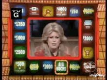

Originally developed as a lesson for high school students at Emory Math Circle and taught in January 2022.

Overview
Press Your Luck is an American TV game show from the 80s, recently rebooted and hosted by Elizabeth Banks. On the show, contestants win money and prizes by hitting a button to stop a light moving around the board. The catch is that some spaces (called whammies) cause you to lose all your winnings and start over from zero. On their turn, players can choose to take their spins or pass them to an opponent, creating the dilemma: do you want to press your luck or pass? In this lesson, students will play this game and develop strategies to help them win more money than their opponents, and the most money overall.
Objectives and transferable skills
Probability: students will determine the probability of hitting a whammy (or not) over multiple spins.
Expected value: students will investigate how to assign an expected value to each spin and use this to inform decision making.
Strategy: students will develop, test, and evaluate various play strategies.
Full video of Michael Larson's infamous 1984 game.
Introduction and warmup
We'll start by briefly introducing the gameplay on Press Your Luck, as it originated in 1983. We'll focus here on the multi-contestant phase involving spinning (or not!) on the big board. For more detailed information about the game's rules, see the game shows wiki, or go watch a couple episodes of the show! Original episodes can be found on youtube while the current episodes air on Hulu.
Each game of Press Your Luck has 3 contestants who answer trivia questions for the right to take a spin (or not!) on "the big board." This board contains a total of 54 spaces, each of which could contain cash, prizes, or a whammy --- a grinning red creature who steals all of a contestant's earnings! Even worse, if a contestant hits 4 whammies, they are out of the game entirely. There may be between 5 and 11 whammies placed on the board, so every spin has the opportunity to earn thousands in cash or prizes, but carries the risk of hitting a whammy and losing it all.
On their turn, a contestant can choose to play or pass. Choosing play means taking one of the spins in hopes of winning money and prizes, while choosing to pass gives all of their spins to a rival. The person who gets these passed spins must use them; these spins cannot be passed to another player, unless they hit a whammy. Our main goal for today is to figure out when it is a good idea to play, and when it is best to pass.
How to play Press Your Luck with dice
Since we don't all have a big board lying around, let's simulate each spin by rolling a six-sided die. Here's what each roll is worth:
Whammy! Reset all money to zero. (You are allowed to pass any remaining spins now.)
$200
$300
$400
$500
$1000
Notice that even though we only have 6 "board spaces," we're still about as likely to hit a whammy as on the TV show! (Assuming each spin is random and each space is equally likely to be landed on...)
Setup: you'll need a six-sided die and something to write on to keep track of your score.
2-3 players: decide on the order in which to play. Each player rolls the die to determine how many spins they start with. On each player's turn, they can choose to take one of their spins or pass them to an opponent. Keep track of your scores and remaining spins as you go. Play continues until all players are out of spins. The winner is the player with the most money at the end!
1 player: if you're playing by yourself, you can follow the directions above and play as multiple people. Alternatively, you can play by starting with 5 spins and trying to make the most money. After each spin, you can decide to stop (instead of passing), or risk what you have earned by pressing your luck!
Guiding questions: Try playing using the rules above. As you go, keep in mind the following questions:
When should you play? When should you pass? Why?
Only the winner keeps their money. What are some things you can do to ensure you not only win, but that you keep maximum cash?
What is the likelihood of rolling once and not hitting a whammy?
What is the likelihood of rolling twice and not hitting a whammy?
What is the likelihood of rolling 3, 4, or 5 times in a row without hitting a whammy? You should be able to figure out the likelihood of avoiding a whammy in n consecutive spins.
When does it become more likely than not that you will hit a whammy?
Let's say you start your turn with 6 spins left.
Should you take all 6 spins?
Suppose you take the first 3 spins and don't hit any whammies. You now have 3 spins left. Should you keep playing? Why or why not?
On an "average" spin, how much money will you make? (Note: this is a bad question. Try answering it in different ways!)
In a 2 person game, you have 1 spin remaining and your opponent has 0. You have $2000 and your opponent has $1400. Should you play or pass?
Challenge questions
One spin situations. Assume you have one spin left and your opponent has none.
If you are behind by more than $1000, should you play or pass?
If you are ahead by more than $1000, should you play or pass?
In the other situations, when should you play or pass?
Two spin situations. You have two spins left and your opponent has none. What should you do with them, depending on the score?
(Note: you can try this without answering A above, but it might help!)
Extra spins. In the game show, some spaces have extra spins attached to them. Let’s change our rules so that if you roll a 5 or 6, you get $1000 and an extra spin. Try this and think about the following questions.
How does this change the game, and your strategy?
Do your answers to 5 and 6 above change?
The Michael Larson Game. In 1984, Michael Larson won $110,237 on Press Your Luck ($295,806 in today’s dollars) by spinning over 40 times without hitting a whammy. What is the probability of this, assuming each spin is random? Do you think it was random?
Discussion
Spoiler alert! Below I'll share some answers and insight about the questions above. Try them on your own first, before reading ahead, and proceed only if you're stuck or ready to check your answers and reasoning.
Questions 1 - 4 are just a review of probability. The chance of hitting a whammy (rolling a 1) is 1/6, so for each spin, the likelihood of avoiding a whammy is 5/6. Since the outcome of each spin is the same and doesn't depend on the previous one (they are independent and identically distributed), the probability of getting no whammies in n spins is \(\left(\frac{5}{6}\right)^n\).
If you're not satisfied with this explanation, try writing down all the possibilities of two dice rolls, keeping in mind that it matters which die is which (there are 36 possibilities!). In 30 of these 36 possible rolls, the first die isn't 1. Of those 30 rolls, the second die isn't 1 in 25 of them. Thus in 25 of our 36 possibilities, we avoided the whammy. Since each of these possibilities is equally likely, the likelihood of missing a whammy in two rolls is 25/36, or about 69.4%. Some other examples are recorded below with their numerical values.
Number of spins
Likelihood of no whammies
1
\(\frac{5}{6}\)
2
\(\frac{25}{36} \approx 0.694\)
3
\(\frac{125}{216} \approx 0.579\)
4
\((\frac{5}{6})^4 \approx 0.482\)
5
\((\frac{5}{6})^5 \approx 0.402\)
6
\((\frac{5}{6})^6 \approx 0.335\)
We see above that when taking 3 spins in a row, we are more likely than not to avoid any whammies. But if we take 4 spins in a row, we are more likely to hit a whammy than not.
In question 5 we start thinking about how to play the game. For (a) with six spins, our calculations above suggest that we only have about a 33.5% chance of taking them without a whammy. That means there's almost a 2/3 chance that we'll lose all of our money at some point in those 6 spins. So should we go for it? It depends. Are we currently in first place, or not? And by how much are we leading/behind? How many spins do our opponents have?
Regardless of whether you think it's best to take all six spins or not, how could you test your strategy to see if it works? You might try gathering some data: start with $0 and roll 6 times, calculating your new total. Do this a bunch of times to get an idea of how much you tend to win (or lose!). What if instead you started with $1000, $2000, or $3000? What do you notice?
On the other hand, in (b) we have only 3 spins left, having taken 3 successful spins. Now are are more likely than not (about 58% likely) to avoid the whammy on our final 3 spins. Now the question is basically the same as part (a), only that we have 3 spins left instead of 6.
I gathered some data using a simulation that I repeated 10000 times. Here are the average totals after 3 and 6 spins:
Starting amount
After 3 spins
After 6 spins
$0
$995.56
$1605.32
$1000
$1592.97
$1934.06
$2000
$2153.10
$2245.83
$3000
$2737.57
$2629.18
It looks like when we start with $0, $1000, or $2000, we tended to make more money by playing! But if we start with $3000, we tend to end up with less money after 3 or 6 spins. What else do you notice?
Question 6: how much money to we get on an "average" spin? Another way to phrase this question is what is the expeced value of each spin? One way we might answer is to take the average of the six values on the die: if the whammy is worth zero and the others are worth the amounts listed, we get a total of $2400. Split six ways, the average value is $400. So is each spin worth an average of $400? Why do you agree or disagree?
Think more carefully about the whammy. Above I said it was worth zero, but is that true? Maybe not! If we start with $1200, the whammy takes away that money, so maybe it's worth -$1200 instead of zero. Now the average value of each space is only $200. Can you make the relationship between the money we start with and the expected outcome more precise? How does this change when we are playing against an opponent, and we will win nothing unless we overtake their amount?
Question 7 is a good warmup for challenge question A. Let's see what happens. If we play, we have a 1/6 chance of hitting the whammy and losing the game. On the other hand, we have a 5/6 chance of winning some extra money.
If we pass, our opponent can only win if they roll a 6 and get the $1000. On all other rolls, they will have less money than us and lose the game, leaving us with $2000.
So which is better? It looks like either way we a 5/6 chance of winning. But if we take the spin, we have the chance to win more money than the $2000 we started with. In this case, I would take the chance, in hopes of coming home with an extra few hundred bucks!
I won't give away the challenge questions here, but try them! Or, come up with your own questions and try to answer them.
If you are curious about question D on Michael Larson, you can actually watch his game on YouTube. He won so much that they had to split the episode into two parts! The story of this game is quite fascinating, inspiring a 2003 documentary Big Bucks: The Press Your Luck Scandal. (I haven't seen this film to recommend it.)
Instructor notes
I originally developed and used this lesson for a 60 minute high school math circle lesson. We started by pairing off students into groups of two to play a few rounds of the dice-based version. Then, students answered the questions in their groups. Some groups made progress on the challenge questions and we got to discuss question D briefly as a class at the end. Depending on your time limits and student background, you might choose to spend less (or more) time on the basic probability questions.
I used six-sided dice because they were available. If you have access to 8-, 10-, 12-, or 20-sided dice, you could cook up a set of values for each side, or better yet let the students decide this themselves! To keep things close to the game show, I suggest keeping the whammy probability to between 10% and 20%, but it might be interesting to try extreme values of these as well. There are also often valuable prizes like cars, which dwarf the value of every other space; if using a 20-sided die, it might be interesting to make one space correspond to a similarly rich value.
For a particularly advanced group of students, I might suggest introducing the extra spins earlier (see challenge question C). The presence of extra spin spaces considerably reduces my own personal intuition about the problem.
If your students have the expertise, or would like to learn, suggest that they write a computer program to simulate playing the game. This can be as simple --- or get as detailed --- as you want and could be done in pretty much any programming language. I used python (including the random package) to write the simulation used in my explanation of question 5 above in just a few lines. This could make for a fun introductory project for the student new to programming, and automating the data collection process makes it possible to get a better handle on the expected value and decision-making problems discussed in this lesson!